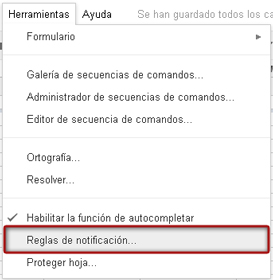
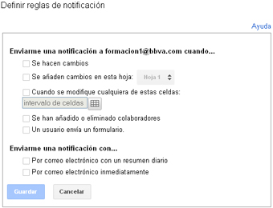
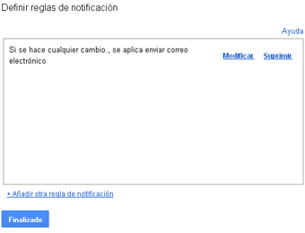
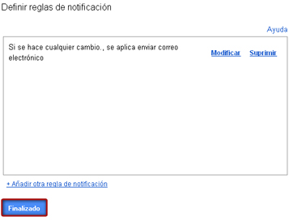

Podemos configurar notificaciones para saber cuándo nuestros colaboradores han modificado las hojas de cálculo y conocer qué hojas o celdas han cambiado, así como elegir la frecuencia con la que deseamos recibirlas. Veremos cómo hacerlo a continuación:
Para habilitar las reglas de notificación iremos al menú Herramientas y pincharemos sobre Definir reglas de notificación.

En la ventana que se abre podremos definir que tipo de avisos queremos recibir, seleccionando cuándo y con qué frecuencia queremos recibir las notificaciones. Finalizaremos haciendo clic en Guardar.

Se abrirá un nuevo cuadro de diálogo reflejando un resumen de las reglas de notificación elegidas. Podremos modificarlas o suprimirlas antes de guardar definitivamente los cambios.

Si estamos de acuerdo con lo definido pulsaremos en Finalizar.
